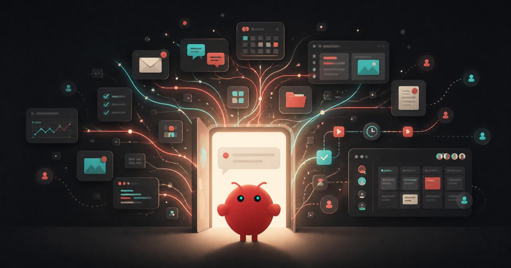
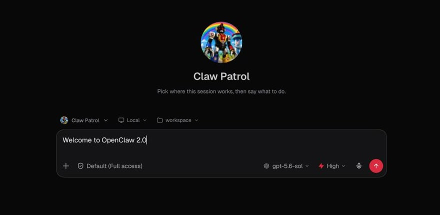
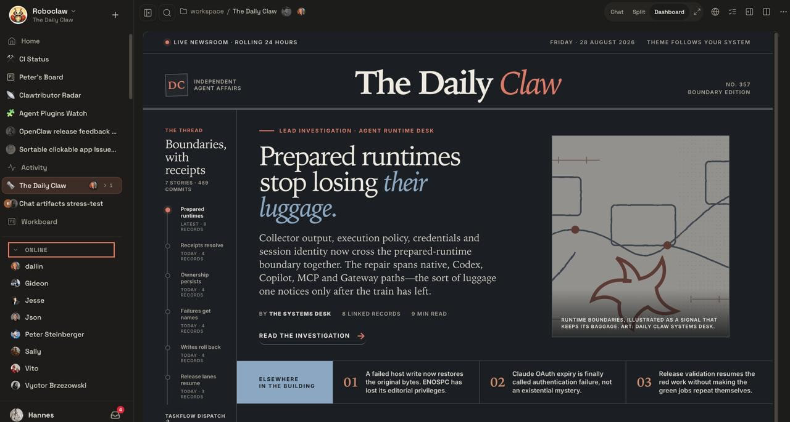

안녕하세요. dev.log입니다.
ChatGPT나 Claude에게 답을 받은 뒤 파일 정리, 브라우저 조작, 메시지 전송은 다시 사람이 옮겨야 할 때가 많습니다. OpenClaw는 사용자가 자신의 기기에서 실행하며 AI 모델, 도구, 메신저를 하나의 Gateway로 연결하는 오픈소스 개인 AI 어시스턴트입니다. OpenClaw 2.0에 해당하는 v2026.8.1의 초점은 모델 자체의 성능보다 사용 환경에 있습니다. 처음 설치한 뒤 진행 중인 일을 이어 보고, 필요한 순간에 권한을 승인하는 흐름을 한곳으로 모았습니다.
새 사용자는 첫 대화까지의 설정이 줄었습니다. 기존 사용자는 세션 저장 방식이 SQLite로 바뀌므로 업데이트보다 검증된 백업이 먼저입니다. 협업과 보안 기능도 크게 늘었습니다. 공식 보안 경계는 여전히 하나입니다. 서로 신뢰하지 않는 사람은 Gateway를 나눠야 합니다.

OpenClaw가 모델·도구·메신저를 잇는 방식
OpenClaw의 공식 설명에 따르면 Gateway는 대화 세션, 도구, 이벤트, 메신저 연결을 관리하는 제어부입니다. 사용자는 웹 화면이나 명령줄, Telegram·Slack·iMessage 같은 채널에서 같은 개인 AI를 부를 수 있습니다. 답변만 생성하는 웹 챗봇보다 할 수 있는 일이 많고, 독립 AI 모델과도 역할이 다릅니다. OpenAI나 Anthropic의 모델은 OpenClaw가 연결해 쓰는 두뇌 중 하나입니다. OpenClaw는 작업을 기억하고 도구로 실행한 뒤 결과를 돌려주는 환경에 가깝습니다.
2.0 공식 발표는 아이의 학교 이메일에서 중요한 일정을 찾아 Telegram으로 보내는 간단한 흐름을 예로 듭니다. 다른 예에서는 iMessage로 받은 질문을 바탕으로 이메일 영수증을 찾아 답을 보냅니다. 이런 동작은 메일과 메신저를 연결하고 필요한 읽기·전송 권한을 줬을 때 가능합니다. 계정 연결과 권한 범위는 사용자가 직접 정해야 합니다.
이 글을 작성할 때 Codex가 AI타임스의 핵심 주장 8개를 공식 발표·릴리스 노트·보안 문서와 대조했습니다. 그 결과 2.0의 많은 변경은 다음 다섯 단계로 압축됐습니다.
| 독자의 단계 | 2.0에서 달라진 부분 | 체감할 변화 | 확인할 경계 |
|---|---|---|---|
| 시작 | 기존 구독·API 키·로컬 모델을 찾고 실제 응답을 확인 | 첫 대화 전 설정 감소 | 지원되는 로그인과 모델만 해당 |
| 이어가기 | 세션·대화 기록의 SQLite 이전과 내장 메모리 | 지난 대화와 장기 작업을 다시 찾기 쉬움 | 이전 버전으로 내릴 때 복원 절차 필요 |
| 실행 | 파일·Git·브라우저·터미널·승인을 대화 가까이에 배치 | 작업 과정과 승인 요청을 한 화면에서 확인 | 도구 권한과 브라우저 계정은 여전히 민감 |
| 협업 | 공유 세션, 사람별 역할, 작업 인계 | 맥락을 유지한 채 함께 보거나 넘겨주기 | 적대적 사용자를 가르는 테넌트 격리는 아님 |
| 통제 | 세션별 권한, 정확한 요청에 묶인 승인, 비밀값 처리 | 허용한 작업의 범위를 더 세밀하게 제한 | 프롬프트 인젝션과 잘못된 설정은 남음 |
AI타임스 보도는 이번 변화를 보안·성능·사용자 인터페이스의 전면 개편으로 요약했습니다. 큰 방향은 공식 자료와 일치합니다. 성능 수치는 OpenClaw가 만든 모의 환경에서 나왔습니다. 보안 강화도 위험이 사라졌다는 뜻보다 강제 통제 수단이 늘었다는 의미에 가깝습니다.
기존 AI 로그인을 재사용하는 첫 설정
이전에는 모델 공급자와 인증, 로컬 모델을 각각 찾아 연결해야 했습니다. v2026.8.1 릴리스 노트에 따르면 새 온보딩은 기기에 이미 있는 Codex·ChatGPT·Claude CLI 로그인과 API 키를 찾습니다. 조건을 충족하는 Ollama·LM Studio 모델도 탐색합니다. 선택한 연결이 실제로 답할 수 있는지 확인한 뒤 저장하므로, 모델 이름만 등록된 실패 상태에서 대화를 시작할 가능성도 줄였습니다.
브라우저의 Control UI도 설정 현황판보다 대화를 먼저 보여 주는 구조로 바뀌었습니다. ChatGPT나 Claude를 써 본 사람이라면 왼쪽의 대화 목록과 중앙 채팅창부터 이해할 수 있고, 세부 설정은 필요할 때 열면 됩니다.

OpenClaw가 공개한 모의 기본 채팅 테스트에서는 JavaScript 요청이 140회에서 45회로 줄었습니다. 시작 시간은 약 1.6초에서 575밀리초로 짧아졌습니다. 이 수치는 모의 Gateway와 HTTP/1.1 지연 50밀리초를 둔 조건에서 측정됐습니다. 실제 PC와 네트워크의 시작 시간을 보장하지는 않습니다. 첫 화면에 필요한 요청을 줄였다는 구현 결과로 보는 편이 맞습니다.
Control UI에서 보이는 에이전트 작업 과정
새 Control UI는 대화 주변에 파일, Git 변경 사항, 브라우저, 터미널, 승인 요청을 배치합니다. 긴 작업이 진행되는 동안 어떤 하위 작업이 실행 중인지 볼 수 있습니다. 에이전트가 구조화된 질문을 보내면 카드에서 답합니다. 채팅으로 지시한 뒤 다른 화면을 오가며 로그와 결과물을 찾던 거리가 짧아졌습니다.
대화 안에서 결과를 보여 주는 위젯도 대시보드에 고정할 수 있습니다. 반복 작업은 Automations 화면에서 만들고 실행 기록과 전달 결과를 나눠 볼 수 있습니다. OpenClaw 2.0이 강조하는 변화는 기능 하나의 추가보다 이 연결에 있습니다. 대화가 명령을 적는 입구라면, 같은 화면이 진행 상황과 결과, 승인을 확인하는 작업대가 됐습니다.
사람의 결정은 사라지지 않습니다. 외부 전송, 파일 변경, 셸 명령처럼 결과가 큰 행동에는 허용 범위와 승인 정책이 필요합니다. 화면이 편해졌다는 이유로 에이전트에 모든 도구와 계정을 한꺼번에 열어 주면, OpenClaw가 추가한 세밀한 통제를 활용하지 못합니다.
SQLite와 내장 메모리가 잇는 장기 작업
2.0은 세션과 대화 기록을 에이전트별 SQLite 데이터베이스로 옮겼습니다. 파일 여러 개에 나뉘던 상태를 조회하고 백업·복원하는 경로도 정리됐습니다. 내장 메모리는 같은 에이전트의 허용된 비공개 대화에서 관련 맥락을 찾습니다. 대화를 초기화하기 직전의 중요한 내용이나 과거 작업을 다시 불러오는 장기 사용에 필요한 기반입니다.
메모리의 범위는 구분해야 합니다. 파생된 메모리를 지워도 원본 대화나 OpenClaw 밖에 만들어진 사본까지 함께 삭제되지는 않습니다. Incognito 대화도 일반 기록과 자동 메모리를 디스크에 남기지 않을 뿐, 선택한 모델 공급자는 메시지를 처리하고 도구는 파일이나 외부 서비스에 흔적을 남길 수 있습니다.
공유 세션으로 이어받는 팀 작업
공유 클라우드 세션은 이 연속성을 사람 사이로 넓힙니다. 진행 중인 작업에 다른 사람을 참여시키거나, 맥락을 유지한 채 세션과 작업 공간을 넘겨줄 수 있습니다.

OpenClaw 권한이 보호하는 범위
팀이 같은 프로젝트를 이어 보는 데에는 유용합니다. 공식 보안 문서는 하나의 Gateway 안의 역할과 세션 가시성이 서로 다른 사용자·조직을 격리하는 다중 테넌트 보안을 제공하지 않는다고 명시합니다. 개인 계정과 회사 계정처럼 분리해야 하는 데이터가 있다면 Gateway와 자격 증명을 나누세요. 가능하면 OS 사용자나 호스트도 분리해야 합니다.
2.0의 보안 변경은 누가 어느 세션에서 어떤 명령과 작업 디렉터리를 허용했는지 승인 기록에 더 정확하게 묶습니다. 세션 권한 모드는 Read only, Guarded, Workspace, Full로 나뉩니다. Guarded는 사람에게 허용 여부를 묻고, Workspace는 AI 검토자가 먼저 심사합니다. Full은 관리자용 전체 권한입니다. 반복 자동화도 승인한 작업이 바뀌면 새 승인을 요구할 수 있습니다.
비밀값은 대화나 모델 문맥에 넣지 않는 마스킹 입력으로 요청할 수 있습니다. 지원되는 Gateway 호스팅 HTTPS 요청에서는 선택형 프록시가 승인한 목적지에만 보호된 비밀값을 대신 넣습니다.
웹 검색, 브라우저 페이지, 이메일, 첨부 파일처럼 바깥에서 들어온 내용은 신뢰하지 않은 외부 콘텐츠로 표시됩니다. 이 표시는 모델이 출처를 구분하도록 돕습니다. 악성 지시가 모델의 판단에 영향을 주는 위험은 남습니다. 도구 정책, 실행 승인, 샌드박스, 채널 허용 목록을 함께 적용해야 하는 이유입니다.
브라우저 제어에는 더 엄격한 기준이 필요합니다. 로그인된 브라우저 프로필을 연결하면 에이전트가 그 프로필로 접근 가능한 계정과 데이터에 사용자를 대신해 행동할 수 있습니다. 일상용 브라우저 프로필 대신 에이전트 전용 프로필을 만들고, 필요한 사이트와 탭만 열어 주는 편이 안전합니다.
새 설치는 읽기 중심 작업부터
처음 설치한다면 메일 요약이나 일정 알림처럼 되돌리기 쉽고 읽기 중심인 한 가지 작업부터 연결하는 편이 좋습니다. 모델 연결이 실제로 응답하는지 확인한 뒤, 전송이나 결제, 파일 삭제처럼 결과가 큰 권한은 나중에 추가하세요. 첫 작업이 유용한지 확인하기 전부터 여러 메신저와 개인 브라우저, 셸 실행 권한을 동시에 연결할 이유는 없습니다.
v2026.8.1 업그레이드는 백업부터
기존 사용자는 순서가 다릅니다. 공식 업데이트 문서에 따라 검증 가능한 백업을 먼저 만드세요. 이전 파일 기반 버전으로 되돌릴 가능성이 있다면, 업그레이드 전에 현행 CLI로 보관된 레거시 대화 기록을 복원하는 절차도 확인해야 합니다. SQLite 이전 뒤 새로 만든 세션은 구버전에서 보이지 않습니다. 2026.9.1-beta.1로 잘못 배포된 패키지는 실제로 2026.8.1-beta.4입니다. 안정판 2026.8.1보다 새 버전으로 해석해서는 안 됩니다.
OpenClaw 2.0은 개인 AI가 무엇을 할 수 있는지보다, 그 일을 어떻게 시작하고 관찰하며 통제할지를 크게 바꾼 버전입니다. 새 사용자는 권한이 작은 한 가지 흐름으로 가치를 확인하고, 기존 사용자는 백업과 마이그레이션 경계를 먼저 확인하세요. 오래 켜 두는 에이전트일수록 기능 수보다 연결한 계정과 도구의 범위를 좁게 유지하는 운영 습관이 더 중요합니다.